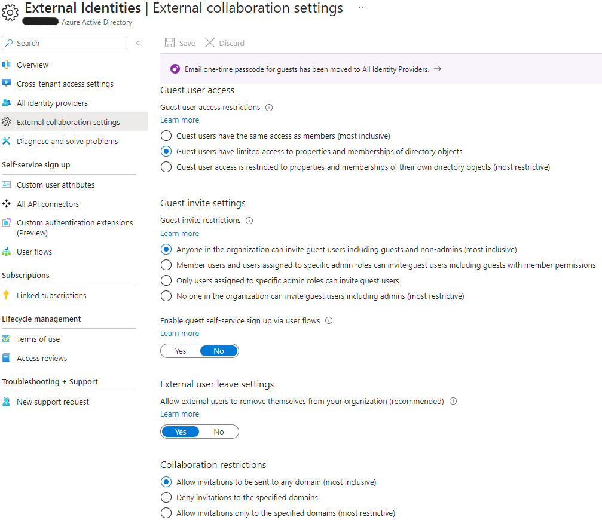
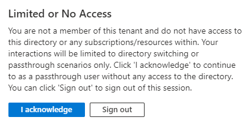
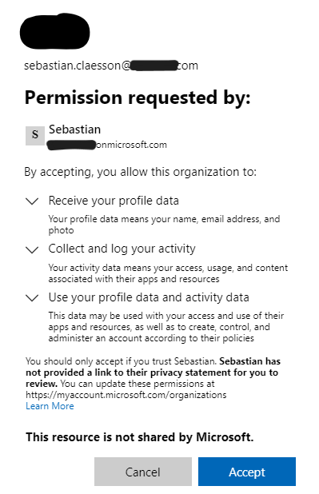
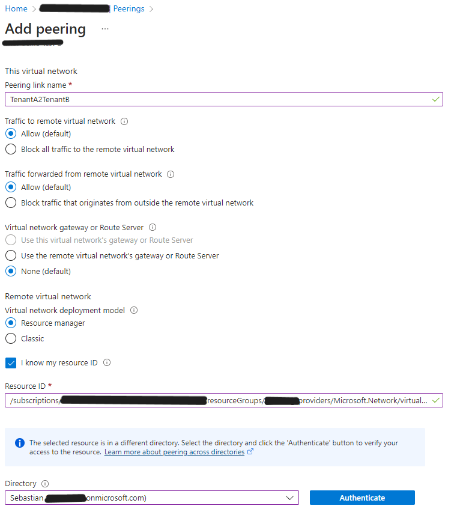
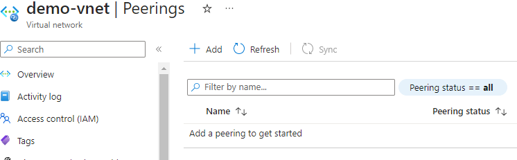
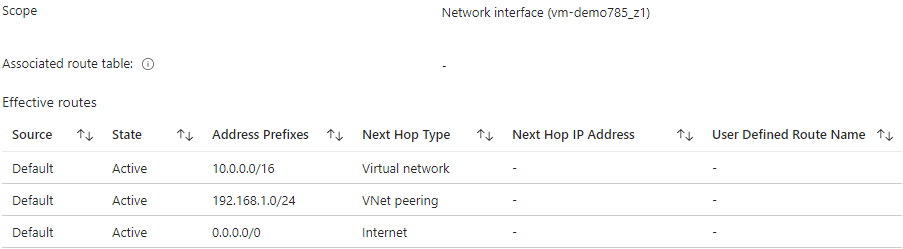
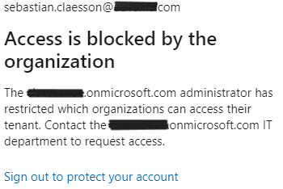
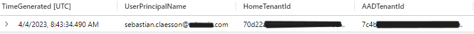

The possibility to create Virtual network peerings across Azure Active Directory tenants has been available since 2018. It's a feature which is allowed by default and is quite easy to setup and get started with. It helps provide private networking between two Azure AD tenants subscriptions and can be an alternative to private link/private endpoints etc.
This post will go through the setup and requirements, but also how you can detect cross-tenant collaboration & blocking it. I will not deep-dive into all the toolings around it, such as Conditional access or other features you get available by using Azure AD Premium.
Azure AD settings & invitation process
Tenant A is a new Tenant, out-of-box, with no customization done to External collaboration settings.

This means that anyone in the Tenant A organization can invite guest users and that it may be sent to any domain.
Reference: Cross-tenant access settings
We attempt to reach the Azure AD Tenant A from the user in Tenant B, without being invited as a guest to that tenant.

If you are inviting a user that does not have an E-mail address, you can use PowerShell to create and consume an invitation.
$params = @{
InvitedUserDisplayName = "Sebastian Guest user"
InvitedUserEmailAddress = "sebastian.claesson@contoso.com"
InviteRedirectUrl = "https://myapplications.microsoft.com"
SendInvitationMessage = $false
}
$Invite = New-MgInvitation @params
$invite |
select-object Id, InviteRedeemUrl, InvitedUserDisplayName, InvitedUserEmailAddress, InvitedUserType, Status, @{'n'='UserId';'E'={$_.InvitedUser.Id}} |
ConvertTo-JsonOnce we consume the InviteRedeemUrl, we simply go to the invited user's context and browse to the link.

Once the invitation has been accepted, we can verify that the user has been created in Tenant A:
Get-MgUser -userId $Invite.InvitedUser.Id
# Output
Id : a9cf0759-4de1-4ee2-85a6-47ff8f4e34f0
DisplayName : Sebastian Claesson
UserPrincipalName : sebastian.claesson_contoso.com#EXT#@tenantA.onmicrosoft.comEstablishing a network peering from Tenant B to Tenant A

We receive an error that the client does not have permission to perform action 'peer/action' on the linked scope. We'll assign our Tenant B user the role of "Network Contributor" in the correct subscription of Tenant A and make a new attempt.
Get-AzVirtualNetworkPeering -VirtualNetworkName "vnet-demo-test" -ResourceGroupName "demo-test-rg" |
Select Name, @{'N'='RemoteVnetId';'E'={$_.RemoteVirtualNetwork.Id}}, PeeringSyncLevel, PeeringState, ProvisioningState | fl
# Output
Name : TenantB2TenantA
RemoteVnetId : /subscriptions/.../providers/Microsoft.Network/virtualNetworks/demo-vnet
PeeringSyncLevel : RemoteNotInSync
PeeringState : Initiated
ProvisioningState : SucceededThe peering has been initiated but not completed. We need to establish a peer from Tenant A to Tenant B as well.

After establishing both sides, we can confirm the peering:

How do we protect our Organization?
You might ask yourself "How do we protect our employees/organization from accidentally allowing cross-tenant virtual network peerings to prevent data exfiltration?"
Outbound blocked
If we set the Outbound access settings for B2B collaboration to "All blocked", we can still establish a network peering.
Inbound blocked
If we set the Inbound access settings for B2B collaboration to "All blocked", we are unable to establish a peer from Tenant B to Tenant A.

Detection
There's a workbook published in Azure AD called "Cross-tenant access activity" that you can utilize if logs are streamed to a log analytics workspace.
SigninLogs
| project TimeGenerated,
UserPrincipalName,
HomeTenantId,
AADTenantId,
ResourceTenantId,
ResourceDisplayName,
Status,
UserType,
UserId
| where UserId != "00000000-0000-0000-0000-000000000000"
| where HomeTenantId != ''
| where HomeTenantId != AADTenantId
| extend status = case(Status.errorCode == 0, "Success", "Failure")
Summary
It's a good idea to keep track of possible cross-tenant integrations, whether it's virtual network peerings, private links, private endpoints or service endpoints. This post only covers some of these points and how it can be prevented using methods other than Azure policy or Azure monitor/alert.
This post resulted in a pull request to update Microsoft Learn documentation on Pull Request 107640.